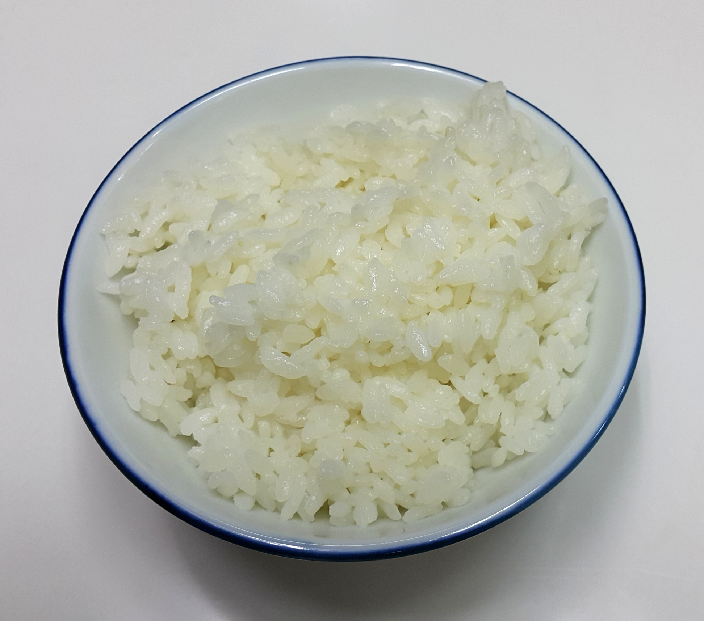

Review Session
Fall 2026
The same NC State–UNC ticket gives a die-hard Wolfpack fan many utils and a friend tagging along very few. Unit 5 said it in dollars: willingness to pay differs by person.
Utils are not dollars. They are also not a verdict on whether a good is healthy, worthy or important.
You can rank your own options. You cannot say that your 5 utils are more than your roommate's 3.
Given the concepts in this unit, which of the following statements is true?
Choose A, B, C, or D before revealing.
A compares your own enjoyment of two activities. B, C, and D compare different people: their utils do not share a common scale, even when the numbers are equal.
Write a short explanation, then compare with a partner.
Think first · explain your reasoning.
Utility is personal. We cannot add different people's utils to measure consumer surplus.
From Unit 5, consumer surplus is measured in dollars: willingness to pay minus the price paid, summed over purchased units. Those dollar amounts can be added across buyers.
You have eaten two slices of pizza. You decide to eat a third slice. The extra satisfaction that the third slice adds is its marginal utility.
The satisfaction you get from all three slices together.
The additional satisfaction from eating the third slice after the first two.
Definition: textbook, Consumer Choices, Section 6.1.
Slices 1–4 add 24, 18, 12, then 6 utils. Each adds less, so TU rises more slowly.
The 5th slice adds nothing. TU stays at 60 utils.
The 6th slice makes you worse off: MU = −6. TU falls from 60 to 54 utils.
Diminishing MU means smaller additions to TU.
TU falls only when MU becomes negative.
What is true for consumers when they choose how much to consume of a good?
Assume MU is positive and diminishing over the range considered.
Each extra unit still adds satisfaction, but adds less than the previous unit. If MU reaches zero, TU stops rising; if MU becomes negative, TU falls.
The table shows the marginal utility from drinking cokes.
| Quantity | 1 | 2 | 3 | 4 | 5 | 6 |
|---|---|---|---|---|---|---|
| Marginal utility | 20 | 15 | 10 | 5 | 0 | −5 |
Start with TU = 0 at zero consumption. Work both parts before revealing.
(a) What is the total utility at 3 units, and what is the marginal utility when you go from 2 cokes to 3 cokes?
TU = 20 + 15 + 10 = 45. The move from 2 to 3 cokes adds 10 utils.
(b) What is the total utility at 6 units?
20 + 15 + 10 + 5 + 0 − 5 = 45. TU reaches 50 at 4 cokes, stays at 50 at 5, then falls to 45 at 6.
You are playing a game with your friends. The first hour is very fun, adding 20 utils to your total utility. The second hour adds 18 utils. The fifth hour adds 0 utils. Which of the following marginal utilities could be associated with the sixth hour of play?
Assume marginal utility continues to decrease after the fifth hour.
The fifth hour has MU = 0. With continued diminishing MU, the sixth hour has negative MU and reduces TU. Without this assumption, the earlier values alone do not determine the sixth hour's MU.
You track the marginal utility (MU) you receive from homemade cookies: the first cookie gives MU = 8, the second 10, the third 12, the fourth 9, and the fifth 0. At what point does diminishing marginal utility set in?
MU first rises: 8 → 10 → 12. It first falls from 12 to 9 at the fourth cookie. Diminishing MU begins when MU starts falling, even while MU remains positive.
On the line: all income spent.
Inside: money left. Outside: cannot afford.
José: $56 income, $14 per T-shirt, $7 per movie.
14T + 7M = 56
All T-shirts: 56 ÷ 14 = 4.
All movies: 56 ÷ 7 = 8.
Here: −14/7 = −2 movies per T-shirt.
One more T-shirt costs two movies.
The line shifts parallel: outward if income rises, inward if it falls.
The line rotates around the other good's intercept. A price increase rotates it inward.
You have $34 per month to spend on entertainment: movies cost $6 each and ice cream costs $4 each. Placing movies on the vertical axis and ice cream on the horizontal axis, which interpretations of the slope of the budget line are correct? (Select all that apply.)
Slope = −4/6 = −2/3 movie per ice cream: A.
The reverse tradeoff is 6/4 = 3/2 ice creams per movie: D.
A budget line shows your mom's consumption choices between combat boots (vertical axis) and knife throwing (horizontal axis). If the price of knife throwing goes up:
With income and the price of boots unchanged, the maximum number of boots stays the same. More expensive knife throwing reduces the horizontal intercept. The budget line becomes steeper.
MU = 18.00; price = $2/lb
MU = 12.00; price = $4/lb
2 lb rice + 5 lb fruit
At our starting bundle, rice gives 9 utils/$ and fruit gives 3 utils/$. Move $0.10 from fruit to rice:
Gain ≈ 0.90 utils − give up ≈ 0.30 utils = net gain ≈ 0.60.
Same budget, higher TU. The starting bundle cannot be the best.
More rice → rice's MU/P falls.
Less fruit → fruit's MU/P rises.
With diminishing MU, each further shift has a smaller net benefit.
At 8 lb rice + 2 lb fruit, both give 6 utils/$ and TU = 184.
Going further makes the utility gained smaller than the utility given up. Moving $1 either way lowers TU to 183.75.
Here: divisible goods, diminishing MU, both goods consumed, and the full budget spent.
Which of the following signals that the consumption choice with the maximum total utility has been selected?
Assume divisible goods, diminishing MU, both goods consumed, and the budget fully spent.
If one good gives more utility per dollar, shifting a little spending toward it can raise TU. The rule equalizes MU/P; the two marginal utilities themselves can differ.
You buy only two brands of shoes: Nike and Adidas. The more pairs you buy, the lower the marginal utility of each pair. You spend all of your income. Your MU of a pair of Nikes is 200 and your MU of a pair of Adidas is 120. Nikes cost $100 a pair and Adidas cost $80 a pair. Which statement is true?
For this question, use the continuous-choice approximation: purchases can be adjusted in small amounts.
Nike: 200/$100 = 2 utils/$. Adidas: 120/$80 = 1.5 utils/$. A small shift toward Nike gains more utility than it gives up. This describes a spending adjustment, not a one-for-one exchange of shoes.
You like candy and cake. After using your entire $30 budget at the sugar store, you find that the MU of the last candy you consumed was 60 and the MU of the last piece of cake was 30. Assume you have maximized your utility.
Use the equal-MU/P condition at an interior optimum.
60/Pcandy = 30/Pcake
Pcandy/Pcake = 60/30 = 2.
Work out the price before revealing.
Candy: 60/$4 = 15 utils/$.
Cake must also give 15 utils/$:
30/Pcake = 15
Pcake = 30/15 = $2.
Bundles: (rice lb, fruit lb).
The temporary line still passes through A.
Fruit stays $4/lb; income stays $24.
1 lb of fruit now costs 4 lb of rice, up from 2. Rice is relatively cheaper.
Old bundle A: 8 lb rice + 2 lb fruit.
It now costs $8 + $8 = $16.
Set aside $8 so A is still just affordable.
At A, rice's MU/P rises from 6 to 12; fruit's stays at 6. Reallocate toward rice.
The $8 removal is a thought experiment.
Definition: textbook, Consumer Choices, Section 6.2. Compensation keeps the old bundle affordable.
Same new prices: rice $1/lb, fruit $4/lb.
The budget lines are parallel.
Your actual income never changed: $24.
The old bundle costs only $16, leaving $8. At the new prices, restore that buying power.
Normal good → more.
Inferior good → less.
The direction depends on preferences.
Rice: 12.8 → 14.4 lb.
Fruit: 0.8 → 2.4 lb.
Both are normal for this consumer.
Inferior describes an income response, not quality.
Definition: textbook, Consumer Choices, Section 6.2. A → B: substitution; B → C: income.
| Good and type | Substitution effect | Income effect | Overall change |
|---|---|---|---|
| Rice: normal | ↑ | ↑ | Increase |
| Rice: inferior | ↑ | ↓ | Depends on strength |
| Fruit: normal | ↓ | ↑ | Depends on strength |
| Fruit: inferior | ↓ | ↓ | Decrease |
If rice's price rises, reverse the effect directions.
If rice is inferior and its income effect is stronger, a lower price can mean less rice consumed: Giffen behavior. Inferior does not automatically mean Giffen.
Textbook, Consumer Choices, Section 6.2. Giffen insight: Jiaming Mao, Giffen Behavior, pp. 4–7 (CC BY-NC 4.0).

In this Chinese study, rice-price subsidies led households to eat less rice and more seafood.
Rice fills much of the diet when money is tight. Cheaper rice frees up purchasing power, allowing families to eat more preferred foods and rely less on rice.
Substitution effect: cheaper rice → more rice.
Income effect: greater buying power → less rice.
The income effect is stronger.
Sources: Jensen & Miller (2008), American Economic Review; J-PAL study summary.
Your two favorite shows are Ted Lasso and Stranger Things. In a normal week, you buy 3 episodes of each. After the price of Ted Lasso increases, you buy only 2 episodes of Ted Lasso and 2 episodes of Stranger Things. This can be explained by:
Assume both shows are normal goods. Choose the explanation that accounts for both effects.
Ted Lasso: both effects reduce consumption. Stranger Things: substitution pushes consumption up, but the income effect pushes it down more. Its normal-good status alone does not explain the net change.
Which of the following are true at all points on a demand curve? (Select all that apply.)
Each point shows the utility-maximizing quantity at that price. Income stays fixed along the curve; an income change shifts the curve, so C is false.
The law of diminishing marginal utility helps explain why the demand curve slopes downward because:
With diminishing MU, additional units are worth less to the consumer, so a lower price encourages more consumption. This is the usual intuition; diminishing MU alone does not rule out Giffen behavior.